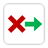

UYAP Hızlı Giriş ve Duyuru Kapatma
Ayarlar
Hızlı Giriş
Adalet e-İmza girişine tıklar, Pin alanına odaklanır
Duyuru Kapatma
Açılan duyuru pencerelerini otomatik kapatır
Bildirim Sesi
Duyuru kapatıldığında sesli bildirim çalar
Duyuru Bildirim Sesi Sıklığı
AYNI duyuruyu kapattığındaki bildirim sesi sıklığı. Sayım, tüm Chrome pencereleri kapanana kadar sürer.
Her kapatmada
2 kapatmada 1
5 kapatmada 1
10 kapatmada 1
Menü Gizleme
Sol menüyü tüm sayfalarda otomatik daraltır/kapatır
Son Kapatılan Duyurular
Yükleniyor...